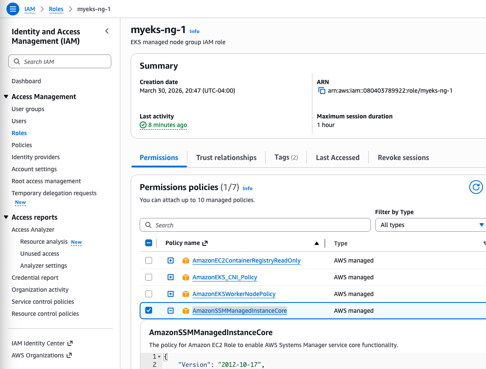
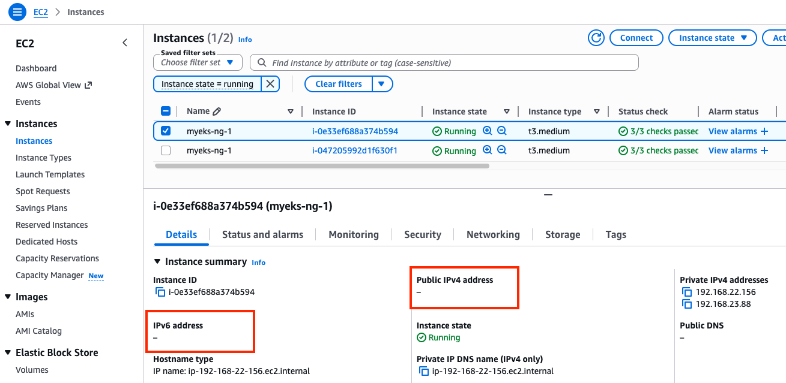

SSM, ALB, Prometheus, Grafana
1. Cluster Provisioning
What's changed compared to w2
- EKS version upgraded to v1.35 to support in-place pod resource(CPU/memory) upgrades.
- Add additional IAM roles to EC2 instance profile to allow SSM Session Manager to access EC2 instances.
- Add metrics-server, external-dns to addons
Warning
Modify TargetRegion and availability_zones in var.tf to wherever you want to deploy.
curl -o aws_lb_controller_policy.json https://raw.githubusercontent.com/kubernetes-sigs/aws-load-balancer-controller/refs/heads/main/docs/install/iam_policy.json
cat << EOF > externaldns_controller_policy.json
{
"Version": "2012-10-17",
"Statement": [
{
"Effect": "Allow",
"Action": [
"route53:ChangeResourceRecordSets",
"route53:ListResourceRecordSets",
"route53:ListTagsForResources"
],
"Resource": [
"arn:aws:route53:::hostedzone/*"
]
},
{
"Effect": "Allow",
"Action": [
"route53:ListHostedZones"
],
"Resource": [
"*"
]
}
]
}
EOF
cat << EOF > cas_autoscaling_policy.json
{
"Version": "2012-10-17",
"Statement": [
{
"Effect": "Allow",
"Action": [
"autoscaling:DescribeAutoScalingGroups",
"autoscaling:DescribeAutoScalingInstances",
"autoscaling:DescribeLaunchConfigurations",
"autoscaling:DescribeScalingActivities",
"ec2:DescribeImages",
"ec2:DescribeInstanceTypes",
"ec2:DescribeLaunchTemplateVersions",
"ec2:GetInstanceTypesFromInstanceRequirements",
"eks:DescribeNodegroup"
],
"Resource": ["*"]
},
{
"Effect": "Allow",
"Action": [
"autoscaling:SetDesiredCapacity",
"autoscaling:TerminateInstanceInAutoScalingGroup"
],
"Resource": ["*"]
}
]
}
EOF
ls *.json
aws_lb_controller_policy.json cas_autoscaling_policy.json externaldns_controller_policy.json
These policy files are supplied into aws_iam_policy resources
terraform init
terraform plan
nohup sh -c "terraform apply -auto-approve" > create.log 2>&1 &
tail -f create.log
It will take about 12 minutes to provision the entire cluster resources. After the deployment is done, check the state of key resources.
Update myeks cluster with the new context.
$(terraform output -raw configure_kubectl)
kubectl config rename-context $(cat ~/.kube/config | grep current-context | awk '{print $2}') myeks
# Context "arn:aws:eks:us-east-1:080403789922:cluster/myeks" renamed to "myeks".
2. Access Instance with SSM
In addition to ssh, Session Manager(SSM) provides a way to access the instance cli.
aws ssm describe-instance-information \
--query "InstanceInformationList[*].{InstanceId:InstanceId, Status:PingStatus, OS:PlatformName}" \
--output text # table
i-047205992d1f630f1 Amazon Linux Online
i-0e33ef688a374b594 Amazon Linux Online
# https://docs.aws.amazon.com/ko_kr/systems-manager/latest/userguide/install-plugin-macos-overview.html
brew install --cask session-manager-plugin # macOS - Disable date: 2026-09-01
aws ssm start-session --target i-047205992d1f630f1
Starting session with SessionId: admin-h32jgdpoznvu4n9d7lktisl3ie
sh-5.2$ bash
[ssm-user@ip-192-168-13-172 bin]$
What enables to access the instance using sesson manager?
AmazonSSMManagedInstanceCore policy is added to EKS managed node group IAM role.
{kind=link}
How could my terminal access the instance with no public IP?

{kind=link}
{kind=link}
When the SSM Agent starts up on your EC2 instance (usually at boot), it immediately initiates an outbound HTTPS (TLS) connection to the Systems Manager service endpoints in the AWS Cloud. It uses a technology similar to WebSockets or Long Polling. When you start a session via the console or CLI, here's what happens:
- AWS Console/CLI sends a request to the Session Manager service.
- Session Manager looks at its list of active tunnels and finds the one belonging to your instance.
- It sends a Start Session signal down that existing outbound tunnel.
- SSM Agent receives the signal, spawns a local shell process (like
/bin/bash), and begins streaming the input/output of that shell back through the same tunnel.
{kind=link}
Why does this matter?
- No Inbound Rules: Because the agent initiates the connection, your Security Group can have zero inbound rules and still work perfectly.
- Private Subnets: This is why SSM works for instances in private subnets (provided they have a route to the internet via NAT Gateway or VPC Endpoints).
- Identity-Based: The connection is only allowed if the Instance's IAM Role has the
AmazonSSMManagedInstanceCorepolicy, which gives the agent permission to check-in with the AWS service.
3. Confirm Addons
aws eks list-addons --cluster-name myeks | jq
{
"addons": [
"coredns",
"external-dns",
"kube-proxy",
"metrics-server",
"vpc-cni"
]
}
kubectl get deploy -n kube-system metrics-server
kubectl describe deploy -n kube-system metrics-server
kubectl get pod -n kube-system -l app.kubernetes.io/instance=metrics-server -o wide
kubectl get pdb -n kube-system metrics-server
kubectl get svc,ep -n kube-system metrics-server
kubectl api-resources | grep -i metrics
kubectl explain NodeMetrics
kubectl explain PodMetrics
kubectl api-versions | grep metrics
kubectl get apiservices |egrep '(AVAILABLE|metrics)'
kubectl top node
kubectl top pod -A
kubectl top pod -n kube-system --sort-by='cpu'
kubectl top pod -n kube-system --sort-by='memory'
kubectl get deploy,pod,svc,ep,sa -n external-dns
kubectl get sa -n external-dns external-dns -o yaml
kubectl describe deploy -n external-dns external-dns
...
Args:
--log-level=info
--log-format=text
--interval=1m
--source=service
--source=ingress
--policy=upsert-only # record should be manually deleted in route 53
--registry=txt
--txt-owner-id=myeks
--provider=aws
...
4. Install AWS Load Balancer Controller
helm install aws-load-balancer-controller eks/aws-load-balancer-controller -n kube-system --version 3.1.0 \
--set clusterName=myeks \
--set region=us-east-1
http_put_response_hop_limit = 2 in metadata options
Why is http_put_response_hop_limit set to 2 in metadata options for eks_managed_node_groups?
In EKS, this setting is crucial for Pods being able to access the EC2 instance metadata.
What it does:
The Hop Limit controls how many network hops a packet is allowed to make before it is discarded.
Hop Limit = 1: The packet can only reach the Host (the EC2 node). It cannot cross any additional network boundaries.Hop Limit = 2: The packet can reach the Host AND jump one more step into another network namespace—like a Docker container or a Kubernetes Pod.
Why it's necessary:
Modern AWS security uses IMDSv2, which requires a PUT request to get a session token.
- Because Kubernetes Pods run in their own network namespace, a request from a Pod to the metadata service (
169.254.169.254) is seen as 2 hops away. - If you leave it at the default of
1, your Pods (like the AWS Load Balancer Controller or ExternalDNS) will fail to get credentials because their requests will be blocked before reaching the metadata service.
helm list -n kube-system
kubectl get pod -n kube-system -l app.kubernetes.io/name=aws-load-balancer-controller
kubectl logs -n kube-system deployment/aws-load-balancer-controller -f
5. Install EKS Node Viewer
``` bash title="Download binary directly from github" wget -O eks-node-viewer https://github.com/awslabs/eks-node-viewer/releases/download/v0.7.4/eks-node-viewer_Linux_x86_64 chmod +x eks-node-viewer sudo mv -v eks-node-viewer /usr/local/bin
```
# Standard usage
eks-node-viewer
# Display both CPU and Memory Usage
eks-node-viewer --resources cpu,memory
eks-node-viewer --resources cpu,memory --extra-labels eks-node-viewer/node-age
# Display extra labels, i.e. AZ : node 에 labels 사용 가능
eks-node-viewer --extra-labels topology.kubernetes.io/zone
eks-node-viewer --extra-labels kubernetes.io/arch
# Sort by CPU usage in descending order
eks-node-viewer --node-sort=eks-node-viewer/node-cpu-usage=dsc
# Karenter nodes only
eks-node-viewer --node-selector "karpenter.sh/provisioner-name"
# Specify a particular AWS profile and region
AWS_PROFILE=myprofile AWS_REGION=us-west-2
Computed Labels : --extra-labels
# eks-node-viewer/node-age - Age of the node
eks-node-viewer --extra-labels eks-node-viewer/node-age
eks-node-viewer --extra-labels topology.kubernetes.io/zone,eks-node-viewer/node-age
# eks-node-viewer/node-ephemeral-storage-usage - Ephemeral Storage usage (requests)
eks-node-viewer --extra-labels eks-node-viewer/node-ephemeral-storage-usage
# eks-node-viewer/node-cpu-usage - CPU usage (requests)
eks-node-viewer --extra-labels eks-node-viewer/node-cpu-usage
# eks-node-viewer/node-memory-usage - Memory usage (requests)
eks-node-viewer --extra-labels eks-node-viewer/node-memory-usage
# eks-node-viewer/node-pods-usage - Pod usage (requests)
eks-node-viewer --extra-labels eks-node-viewer/node-pods-usage

eks-node-viewer does not display actual resource usage
It displays the scheduled pod resource requests against the allocatable capacity on the node. It does not display the actual pod resource usage.
If you look at the codebase in /pkg/model/pod.go, it returns the sum of the resources requested by the pod. This doesn't include any init containers.
func (p *Pod) Requested() v1.ResourceList {
p.mu.RLock()
defer p.mu.RUnlock()
requested := v1.ResourceList{}
for _, c := range p.pod.Spec.Containers {
for rn, q := range c.Resources.Requests {
existing := requested[rn]
existing.Add(q)
requested[rn] = existing
}
}
requested[v1.ResourcePods] = resource.MustParse("1")
return requested
}
6. Install kube-ops-view + ALB Ingress
helm repo add geek-cookbook https://geek-cookbook.github.io/charts/
helm install kube-ops-view geek-cookbook/kube-ops-view \
--version 1.2.2 \
--set service.main.type=ClusterIP \
--set env.TZ="America/New_York" \
--namespace kube-system
kubectl get deploy,pod,svc,ep -n kube-system -l app.kubernetes.io/instance=kube-ops-view
The following step is to deploy ALB Ingress. In case you do not have your domain registered in AWS Route 53, you can use nip.io or sslip.io. Please click without your domain tab below to explore it:
CERT_ARN=$(aws acm list-certificates --query 'CertificateSummaryList[].CertificateArn[]' --output text)
echo $CERT_ARN
MyDomain={your-domain}
echo $MyDomain
cat <<EOF | kubectl apply -f -
apiVersion: networking.k8s.io/v1
kind: Ingress
metadata:
annotations:
alb.ingress.kubernetes.io/certificate-arn: $CERT_ARN
alb.ingress.kubernetes.io/group.name: study
alb.ingress.kubernetes.io/listen-ports: '[{"HTTPS":443}, {"HTTP":80}]'
alb.ingress.kubernetes.io/load-balancer-name: myeks-ingress-alb
alb.ingress.kubernetes.io/scheme: internet-facing
alb.ingress.kubernetes.io/ssl-redirect: "443"
alb.ingress.kubernetes.io/success-codes: 200-399
alb.ingress.kubernetes.io/target-type: ip
labels:
app.kubernetes.io/name: kubeopsview
name: kubeopsview
namespace: kube-system
spec:
ingressClassName: alb
rules:
- host: kubeopsview.$MyDomain
http:
paths:
- backend:
service:
name: kube-ops-view
port:
number: 8080
path: /
pathType: Prefix
EOF
1. Deploy ALB Ingress.
Since you do not own the sslip.io domain, you cannot get a public certificate for it directly through ACM. Not having a public certificate means we can't make a TLS connection. Thus,
- remove
{"HTTPS":443}entry fromalb.ingress.kubernetes.io/listen-portsannotation - remove
alb.ingress.kubernetes.io/ssl-redirect: "443"annotation
cat <<EOF | kubectl apply -f -
apiVersion: networking.k8s.io/v1
kind: Ingress
metadata:
annotations:
alb.ingress.kubernetes.io/group.name: study
alb.ingress.kubernetes.io/listen-ports: '[{"HTTP":80}]'
alb.ingress.kubernetes.io/load-balancer-name: myeks-ingress-alb
alb.ingress.kubernetes.io/scheme: internet-facing
alb.ingress.kubernetes.io/success-codes: 200-399
alb.ingress.kubernetes.io/target-type: ip
labels:
app.kubernetes.io/name: kubeopsview
name: kubeopsview
namespace: kube-system
spec:
ingressClassName: alb
rules:
- host: kubeopsview.3.1.2.3.sslip.io
http:
paths:
- backend:
service:
name: kube-ops-view
port:
number: 8080
path: /
pathType: Prefix
EOF
2. Get the ALB DNS name and resolve it to an IP address.
ALB_DNS=$(kubectl get ingress -n kube-system kubeopsview -o jsonpath='{.status.loadBalancer.ingress[0].hostname}')
echo $ALB_DNS
myeks-ingress-alb-1216686509.us-east-1.elb.amazonaws.com
ALB_IP=$(dig +short $ALB_DNS | head -n 1)
echo $ALB_IP
98.95.12.11
MyDomain=${ALB_IP}.sslip.io
echo $MyDomain
98.95.12.11.sslip.io
3. Update your Ingress with the actual sslip.io hostname
kubectl patch ingress -n kube-system kubeopsview --type='json' -p="[{\"op\": \"replace\", \"path\": \"/spec/rules/0/host\",
\"value\":\"kubeopsview.$ALB_IP.sslip.io\"}]"
# confirm the host
kubectl get ingress kubeopsview -n kube-system -o jsonpath='{.spec.rules[0].host}'
kubeopsview.98.95.12.11.sslip.io
4. Confirm the access
{kind=link}
7. Install Prometheus and Grafana
Deploy resources
helm repo add prometheus-community https://prometheus-community.github.io/helm-charts
cat <<EOT > monitor-values.yaml
prometheus:
prometheusSpec:
podMonitorSelectorNilUsesHelmValues: false
serviceMonitorSelectorNilUsesHelmValues: false
additionalScrapeConfigs:
# apiserver metrics
- job_name: apiserver-metrics
kubernetes_sd_configs:
- role: endpoints
scheme: https
tls_config:
ca_file: /var/run/secrets/kubernetes.io/serviceaccount/ca.crt
insecure_skip_verify: true
bearer_token_file: /var/run/secrets/kubernetes.io/serviceaccount/token
relabel_configs:
- source_labels:
[
__meta_kubernetes_namespace,
__meta_kubernetes_service_name,
__meta_kubernetes_endpoint_port_name,
]
action: keep
regex: default;kubernetes;https
# Scheduler metrics
- job_name: 'ksh-metrics'
kubernetes_sd_configs:
- role: endpoints
metrics_path: /apis/metrics.eks.amazonaws.com/v1/ksh/container/metrics
scheme: https
tls_config:
ca_file: /var/run/secrets/kubernetes.io/serviceaccount/ca.crt
insecure_skip_verify: true
bearer_token_file: /var/run/secrets/kubernetes.io/serviceaccount/token
relabel_configs:
- source_labels:
[
__meta_kubernetes_namespace,
__meta_kubernetes_service_name,
__meta_kubernetes_endpoint_port_name,
]
action: keep
regex: default;kubernetes;https
# Controller Manager metrics
- job_name: 'kcm-metrics'
kubernetes_sd_configs:
- role: endpoints
metrics_path: /apis/metrics.eks.amazonaws.com/v1/kcm/container/metrics
scheme: https
tls_config:
ca_file: /var/run/secrets/kubernetes.io/serviceaccount/ca.crt
insecure_skip_verify: true
bearer_token_file: /var/run/secrets/kubernetes.io/serviceaccount/token
relabel_configs:
- source_labels:
[
__meta_kubernetes_namespace,
__meta_kubernetes_service_name,
__meta_kubernetes_endpoint_port_name,
]
action: keep
regex: default;kubernetes;https
# Enable vertical pod autoscaler support for prometheus-operator
#verticalPodAutoscaler:
# enabled: true
ingress:
enabled: true
ingressClassName: alb
hosts:
- prometheus.$MyDomain
paths:
- /*
annotations:
alb.ingress.kubernetes.io/scheme: internet-facing
alb.ingress.kubernetes.io/target-type: ip
alb.ingress.kubernetes.io/listen-ports: '[{"HTTPS":443}, {"HTTP":80}]'
alb.ingress.kubernetes.io/certificate-arn: $CERT_ARN
alb.ingress.kubernetes.io/success-codes: 200-399
alb.ingress.kubernetes.io/load-balancer-name: myeks-ingress-alb
alb.ingress.kubernetes.io/group.name: study
alb.ingress.kubernetes.io/ssl-redirect: '443'
grafana:
defaultDashboardsTimezone: Asia/Seoul
adminPassword: prom-operator
ingress:
enabled: true
ingressClassName: alb
hosts:
- grafana.$MyDomain
paths:
- /*
annotations:
alb.ingress.kubernetes.io/scheme: internet-facing
alb.ingress.kubernetes.io/target-type: ip
alb.ingress.kubernetes.io/listen-ports: '[{"HTTPS":443}, {"HTTP":80}]'
alb.ingress.kubernetes.io/certificate-arn: $CERT_ARN
alb.ingress.kubernetes.io/success-codes: 200-399
alb.ingress.kubernetes.io/load-balancer-name: myeks-ingress-alb
alb.ingress.kubernetes.io/group.name: study
alb.ingress.kubernetes.io/ssl-redirect: '443'
kubeControllerManager:
enabled: false
kubeEtcd:
enabled: false
kubeScheduler:
enabled: false
prometheus-windows-exporter:
prometheus:
monitor:
enabled: false
EOT
cat monitor-values.yaml
helm repo add prometheus-community https://prometheus-community.github.io/helm-charts
cat <<EOT > monitor-values.yaml
prometheus:
prometheusSpec:
podMonitorSelectorNilUsesHelmValues: false
serviceMonitorSelectorNilUsesHelmValues: false
additionalScrapeConfigs:
# apiserver metrics
- job_name: apiserver-metrics
kubernetes_sd_configs:
- role: endpoints
scheme: https
tls_config:
insecure_skip_verify: true
bearer_token_file: /var/run/secrets/kubernetes.io/serviceaccount/token
relabel_configs:
- source_labels:
[
__meta_kubernetes_namespace,
__meta_kubernetes_service_name,
__meta_kubernetes_endpoint_port_name,
]
action: keep
regex: default;kubernetes;https
# Scheduler metrics
- job_name: 'ksh-metrics'
kubernetes_sd_configs:
- role: endpoints
metrics_path: /apis/metrics.eks.amazonaws.com/v1/ksh/container/metrics
scheme: https
tls_config:
ca_file: /var/run/secrets/kubernetes.io/serviceaccount/ca.crt
insecure_skip_verify: true
bearer_token_file: /var/run/secrets/kubernetes.io/serviceaccount/token
relabel_configs:
- source_labels:
[
__meta_kubernetes_namespace,
__meta_kubernetes_service_name,
__meta_kubernetes_endpoint_port_name,
]
action: keep
regex: default;kubernetes;https
# Controller Manager metrics
- job_name: 'kcm-metrics'
kubernetes_sd_configs:
- role: endpoints
metrics_path: /apis/metrics.eks.amazonaws.com/v1/kcm/container/metrics
scheme: https
tls_config:
ca_file: /var/run/secrets/kubernetes.io/serviceaccount/ca.crt
insecure_skip_verify: true
bearer_token_file: /var/run/secrets/kubernetes.io/serviceaccount/token
relabel_configs:
- source_labels:
[
__meta_kubernetes_namespace,
__meta_kubernetes_service_name,
__meta_kubernetes_endpoint_port_name,
]
action: keep
regex: default;kubernetes;https
# Enable vertical pod autoscaler support for prometheus-operator
#verticalPodAutoscaler:
# enabled: true
ingress:
enabled: true
ingressClassName: alb
hosts:
- prometheus.$MyDomain
paths:
- /*
annotations:
alb.ingress.kubernetes.io/scheme: internet-facing
alb.ingress.kubernetes.io/target-type: ip
alb.ingress.kubernetes.io/listen-ports: '[{"HTTP":80}]'
alb.ingress.kubernetes.io/success-codes: 200-399
alb.ingress.kubernetes.io/load-balancer-name: myeks-ingress-alb
alb.ingress.kubernetes.io/group.name: study
grafana:
defaultDashboardsTimezone: America/New_York
adminPassword: prom-operator
ingress:
enabled: true
ingressClassName: alb
hosts:
- grafana.$MyDomain
paths:
- /*
annotations:
alb.ingress.kubernetes.io/scheme: internet-facing
alb.ingress.kubernetes.io/target-type: ip
alb.ingress.kubernetes.io/listen-ports: '[{"HTTP":80}]'
alb.ingress.kubernetes.io/success-codes: 200-399
alb.ingress.kubernetes.io/load-balancer-name: myeks-ingress-alb
alb.ingress.kubernetes.io/group.name: study
kubeControllerManager:
enabled: false
kubeEtcd:
enabled: false
kubeScheduler:
enabled: false
prometheus-windows-exporter:
prometheus:
monitor:
enabled: false
EOT
cat monitor-values.yaml
helm install kube-prometheus-stack prometheus-community/kube-prometheus-stack \
--version 80.13.3 \
-f monitor-values.yaml --create-namespace --namespace monitoring
helm list -n monitoring
kubectl get sts,ds,deploy,pod,svc,ep,ingress -n monitoring
kubectl get prometheus,servicemonitors -n monitoring
kubectl get crd | grep monitoring
kubectl get-all -n monitoring
For sslip.io domain only, fix the host in Ingress:
GRAF_HOST=$(kubectl get ingress -n monitoring kube-prometheus-stack-grafana -o jsonpath='{.status.loadBalancer.ingress[0].hostname}')
PROM_HOST=$(kubectl get ingress -n monitoring kube-prometheus-stack-prometheus -o jsonpath='{.status.loadBalancer.ingress[0].hostname}')
echo $GRAF_HOST $PROM_HOST
myeks-ingress-alb-1216686509.us-east-1.elb.amazonaws.com myeks-ingress-alb-1216686509.us-east-1.elb.amazonaws.com
GRAF_IP=$(dig +short $GRAF_HOST | head -n 1)
PROM_IP=$(dig +short $PROM_HOST | head -n 1)
echo $GRAF_IP $PROM_IP
100.49.118.140 100.49.118.140
GrafDomain=${GRAF_IP}.sslip.io
PromDomain=${PROM_IP}.sslip.io
echo $GrafDomain $PromDomain
100.49.118.140.sslip.io 100.49.118.140.sslip.io
kubectl patch ingress -n monitoring kube-prometheus-stack-grafana --type='json' -p="[{\"op\": \"replace\", \"path\": \"/spec/rules/0/host\",
\"value\":\"grafana.$GrafDomain\"}]"
kubectl patch ingress -n monitoring kube-prometheus-stack-prometheus --type='json' -p="[{\"op\": \"replace\", \"path\": \"/spec/rules/0/host\",
\"value\":\"prometheus.$PromDomain\"}]"
# confirm the host
kubectl get ingress kube-prometheus-stack-grafana -n monitoring -o jsonpath='{.spec.rules[0].host}'
grafana.100.49.118.140.sslip.io
kubectl get ingress kube-prometheus-stack-prometheus -n monitoring -o jsonpath='{.spec.rules[0].host}'
prometheus.100.49.118.140.sslip.io
Check the access:
{kind=link}
{kind=link}
In console, you can find in the Load Balancer's section that multiple rules are registered to a single listener(HTTP:80) in the application load balancer(myeks-ingress-alb).
{kind=link}
kcm and ksh metrics failed to scrape
If you visits the targets path in prometheus, you will find Kube Controller Manager and Kube Scheduler metrics fail to scrape.
{kind=link}
metrics endpoints for both services are accessible without any errors.
kubectl get --raw "/apis/metrics.eks.amazonaws.com/v1/ksh/container/metrics"
kubectl get --raw "/apis/metrics.eks.amazonaws.com/v1/kcm/container/metrics"
The main blocker is the authority to access the above endpoints is missing in the cluster role binding to the service account for both pods.
kubectl rbac-tool lookup kube-prometheus-stack-prometheus
# install krew
brew install krew
# append to .zshrc
echo 'export PATH="${KREW_ROOT:-$HOME/.krew}/bin:$PATH"' >> ~/.zshrc
# reload shell configuration
source ~/.zshrc
# install rbac-tool
kubectl krew install rbac-tool
# look up role binding to kube-prometheus-stack-prometheus sa
kubectl rbac-tool lookup kube-prometheus-stack-prometheus
SUBJECT | SUBJECT TYPE | SCOPE | NAMESPACE | ROLE | BINDING
-----------------------------------+----------------+-------------+-----------+----------------------------------+-----------------------------------
kube-prometheus-stack-prometheus | ServiceAccount | ClusterRole | | kube-prometheus-stack-prometheus | kube-prometheus-stack-prometheus
# install rolesum
kubectl krew install rolesum
# look up policies
kubectl rolesum kube-prometheus-stack-prometheus -n monitoring
ServiceAccount: monitoring/kube-prometheus-stack-prometheus
Secrets:
Policies:
• [CRB] */kube-prometheus-stack-prometheus ⟶ [CR] */kube-prometheus-stack-prometheus
Resource Name Exclude Verbs G L W C U P D DC
endpoints [*] [-] [-] ✔ ✔ ✔ ✖ ✖ ✖ ✖ ✖
endpointslices.discovery.k8s.io [*] [-] [-] ✔ ✔ ✔ ✖ ✖ ✖ ✖ ✖
ingresses.networking.k8s.io [*] [-] [-] ✔ ✔ ✔ ✖ ✖ ✖ ✖ ✖
nodes [*] [-] [-] ✔ ✔ ✔ ✖ ✖ ✖ ✖ ✖
nodes/metrics [*] [-] [-] ✔ ✔ ✔ ✖ ✖ ✖ ✖ ✖
pods [*] [-] [-] ✔ ✔ ✔ ✖ ✖ ✖ ✖ ✖
services [*] [-] [-] ✔ ✔ ✔ ✖ ✖ ✖ ✖ ✖
kube-prometheus-stack-prometheus cluster role does not contains metrics.eks.amazonaws.com in the resource target for get action. metrics.eks.amazonaws.com is the resource name for ksh and kcm metrics. Let's add the missing resource and action to the cluster role.
kubectl patch clusterrole kube-prometheus-stack-prometheus --type=json -p='[
{
"op": "add",
"path": "/rules/-",
"value": {
"verbs": ["get"],
"apiGroups": ["metrics.eks.amazonaws.com"],
"resources": ["kcm/metrics", "ksh/metrics"]
}
}
]'
kubectl rolesum kube-prometheus-stack-prometheus -n monitoring
ServiceAccount: monitoring/kube-prometheus-stack-prometheus
Secrets:
Policies:
• [CRB] */kube-prometheus-stack-prometheus ⟶ [CR] */kube-prometheus-stack-prometheus
Resource Name Exclude Verbs G L W C U P D DC
...
kcm.metrics.eks.amazonaws.com/metrics [*] [-] [-] ✔ ✖ ✖ ✖ ✖ ✖ ✖ ✖
ksh.metrics.eks.amazonaws.com/metrics [*] [-] [-] ✔ ✖ ✖ ✖ ✖ ✖ ✖ ✖
...
Now kcm-metrics and ksh-metrics is accessible by prometheus.
{kind=link}
Add grafana dashboard
# download json dashboard file
curl -O https://raw.githubusercontent.com/dotdc/grafana-dashboards-kubernetes/refs/heads/master/dashboards/k8s-system-api-server.json
# change variable to actual string(prometheus)
sed -i '' -e 's/${DS_PROMETHEUS}/prometheus/g' k8s-system-api-server.json
# create my-dashboard configmap
kubectl create configmap my-dashboard --from-file=k8s-system-api-server.json -n monitoring
# add label
kubectl label configmap my-dashboard grafana_dashboard="1" -n monitoring
# confirm k8s-system-api-server.json is added in /tmp/dashboards directory
kubectl exec -it -n monitoring deploy/kube-prometheus-stack-grafana -- ls -l /tmp/dashboards # (1)
- You will find the below line:
Confirm if the dashboard is able to pull data:
{kind=link}
if the dashboard fails to pull data
{kind=link}
If the prometheus is able to scrape metrics but the grafana dashboard fails to pull data, go to Connections > Data Sources and confirm if Prometheus server URL correctly points to {prometheus Service Name}:{port}, by running the following command:
k get svc -n monitoring
NAME TYPE CLUSTER-IP EXTERNAL-IP PORT(S) AGE
...
prometheus-operated ClusterIP None <none> 9090/TCP 2d19h
{kind=link}
After correcting the URL, scroll down to the bottom and click Save & test button. You will find the dashboard is now working.